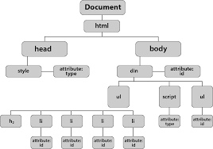

This is the New chapter of the JavaScript Book Practice.
This is the DOM tree,

html parent hai head ka or body ka
head ka children hai meta or title
isi tarah body kabhi childrens hain h1, p, div, section etc
yahi sab chizain mil kar DOM tree banata hain
document.getElementById("email");
p[2].innerHTML;
document.getElementsByTagName("p"); ka zaria
hum children or parents ko access karta hain
DOM (Document Object Model) is a tree-like structure of your HTML page that JavaScript can read and manipulate. Each element, text, space, and even comments become a node in the DOM tree.
div
p Hello p
p World p
div
in doom looks like this
div
├── #text (junk space)
├── p
│ └── #text "Hello"
├── #text (junk space)
├── p
│ └── #text "World"
├── #text (junk space)
div
parentNode.childNodes[0];
parentNode.firstChild;
parentNode.lastChild;
var firstEl = document.getElementById("div1");
var nonexistentEl = firstEl.previousSibling;
var firstEl = document.getElementById("div1");
var nonexistentEl = firstEl.nextSibling;
This is the target name of dom using childnodes
p
div
span
img
a
em
table
li
liElements.length;
nodeList.length;
There are some attributes of DOM
getAttribute (for getting attribute)
setAttribute (for setting attribute)
removeAttribute (for removing attribute)
hasAttribute (for checking attribute)
attribute name means there are two type of information
for attributes in js
key, value pair
document.createElement("p");
document.createTextNode("Hello!");
nodeToAdd.appendChild(newTxt);
parentDiv.appendChild(newParagraph);
parentDiv.insertBefore(newParagraph, paragraph1);
parentDiv.insertBefore(newE, target.nextSibling);
To remove a node, use removeChild